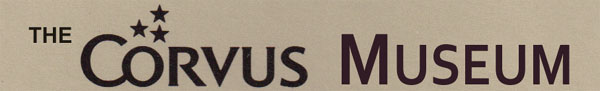

In 1979 a small but amazing company was started in California. It started with the idea of bringing low cost, high speed mass storage to personal computer systems. This idea grew further to then bringing this to not just one computer, but then to allow multiple computers the ability to share high speed mass storage, then peripherals and more. As time went by, Corvus would create "Omninet" - which was its own proprietary networking protocol and hardware system. Corvus would also introduce a very innovative computer called "Concept" seen below.
IMPORTANT NOTE:
If you have any Corvus hardware, software, documentation, marketing/sales materials, photo's
or any other Corvus Systems related items that you'd like to sell or donate to this project, please
email: curt (AT) atarimuseum (DOT) com